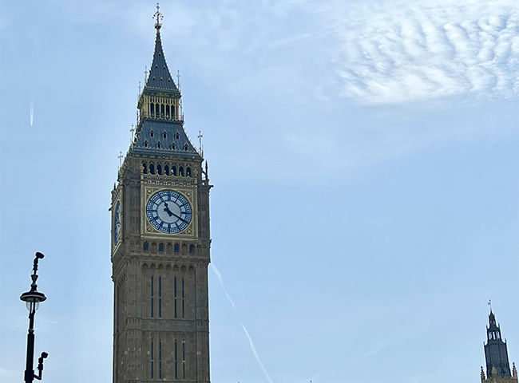
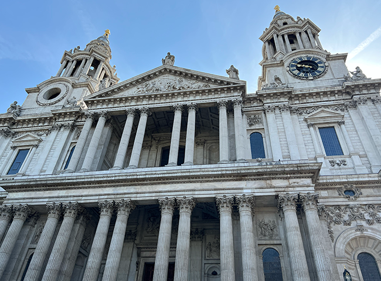
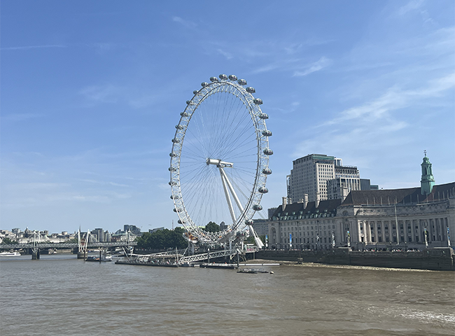
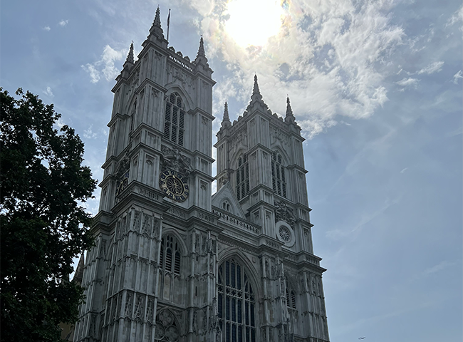
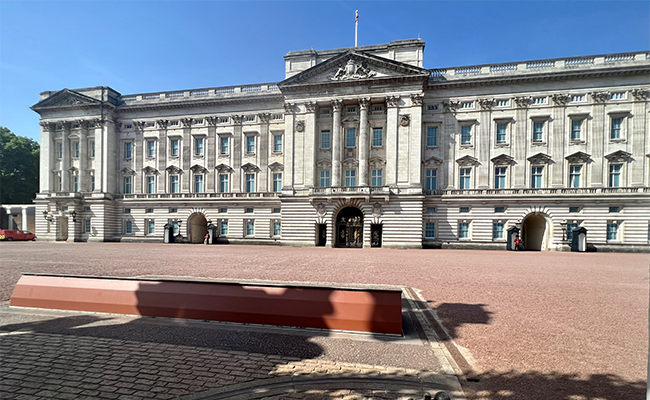
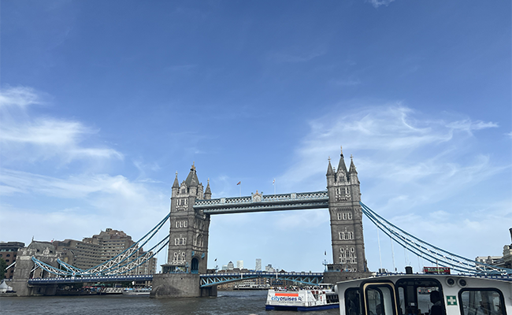

London
London is the capital of England. It is the largest city of England and has a population of over 9 million people. We were a bit unfortunate and travel during an intense heatwave. We experienced high temperatures and were advised to only use the tubes if neccesary. Despite the heat, we were able to visit the many highlights of London. We were in London for a total of 3 days.
Highlights
- Big Ben
- This is the iconic striking clock found in several Hollywood films. It is the nickname given to the Great Bell. It is located at the end of the Palace of Westminster.
- St. Paul's Cathedral
- This Cathedral is an Angelican church that is the seat of the Bishop of London. It is dedicated the Apostle Paul. We did not get to tour the inside, but the exterior was beautiful to see.
- Buckingham Palace
- A trip to London is not complete without a trip to Buckingham Palace. The Queen was not at the office, but we did get to see the changing of the guards.
- London Eye
- The London Eye also refered to as the Millennium Wheel is a large observation wheel. It is located on the South Bank of the River of Thames. On the wheel you are able to see a bird's eye view of the city.
- Tower Bridge
- The bridge is a suspension bridge built between 1886 and 1894. It crosses the River of Thames. While visiting we had the opportunity to see the bridge open and allow boats to cross under the bridge.
- Westminster Abbey
- Locatated in the city of Wesminster, it is a Gothic church. It is where several of the royals exchanged vows. It is also the traditional location for coronations. Notable individuals such as Isaac Newton and Charles Darwin were laid to rest inside the chapels.





